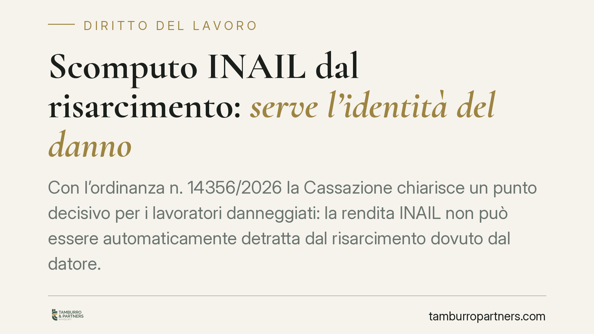

Scomputo INAIL dal risarcimento: serve l'identità del danno
Con l'ordinanza n. 14356/2026 la Cassazione chiarisce un punto decisivo per i lavoratori danneggiati: la rendita INAIL non può essere automaticamente detratta dal risarcimento dovuto dal datore. Lo scomputo è ammesso solo quando le due somme coprono esattamente lo stesso pregiudizio. La vicenda nasce da un caso di mesotelioma da amianto contratto all'Arsenale della Marina Militare di Taranto.

Il caso
La controversia riguarda gli eredi di un lavoratore deceduto per mesotelioma, patologia tumorale legata all'esposizione all'amianto durante il servizio presso l'Arsenale della Marina Militare di Taranto. Gli eredi hanno agito contro il Ministero della Difesa per ottenere il risarcimento del danno subito dal congiunto.
Il nodo giuridico è classico: il lavoratore, oltre al risarcimento civile, aveva percepito (o avevano percepito gli eredi) le prestazioni INAIL. Il datore sosteneva che tali somme dovessero essere sottratte dal risarcimento, per evitare che il danneggiato ricevesse due volte un ristoro per lo stesso danno.
La Cassazione, con l'ordinanza n. 14356/2026, ha respinto l'applicazione automatica dello scomputo.
Inquadramento normativo
Il meccanismo in gioco è quello della *compensatio lucri cum damno*: quando un fatto illecito produce sia un danno sia un vantaggio economico per la stessa persona, il vantaggio può ridurre il risarcimento, ma solo se deriva dallo stesso evento e copre la stessa voce di danno.
Il Testo Unico INAIL (d.P.R. n. 1124/1965) disciplina l'assicurazione obbligatoria contro gli infortuni e le malattie professionali. La rendita INAIL ha una funzione specifica: indennizza la riduzione della capacità lavorativa e, dopo il d.lgs. n. 38/2000, il cosiddetto danno biologico in senso stretto, secondo tabelle legali.
Le Sezioni Unite (sentenze del 2018 sulla *compensatio*) avevano già fissato il principio dell'omogeneità: lo scomputo è legittimo solo tra poste che ristorano il medesimo pregiudizio. La rendita INAIL non copre, ad esempio, il danno morale, il danno biologico differenziale eccedente le tabelle INAIL, né le voci personalissime di sofferenza.
Il principio affermato
La Suprema Corte ribadisce che il giudice non può operare una detrazione "a blocchi", sottraendo l'intera rendita dall'intero risarcimento. Deve invece procedere per poste omogenee: confrontare voce per voce ciò che l'INAIL ha indennizzato con ciò che il risarcimento civile riconosce.
Solo dove c'è sovrapposizione esatta — stesso danno, stessa funzione — scatta lo scomputo. Per tutto il resto, in particolare per le componenti di danno non patrimoniale che l'INAIL non copre (sofferenza interiore, danno morale, danno da perdita del rapporto parentale per gli eredi), il risarcimento resta integro.
Implicazioni pratiche
Per i lavoratori e per i loro eredi la pronuncia ha un peso concreto. Nelle patologie da amianto, dove il risarcimento può raggiungere cifre elevate, uno scomputo integrale della rendita riduce drasticamente la somma effettivamente percepita. La regola dell'omogeneità, invece, preserva le voci di danno più rilevanti sul piano personale.
Per i datori di lavoro — e qui per un ente pubblico come il Ministero della Difesa — significa che la difesa fondata sulla semplice sottrazione delle prestazioni INAIL è destinata a cadere. Occorre dimostrare, voce per voce, la coincidenza tra indennizzo e risarcimento.
Sul piano probatorio, cresce il ruolo della consulenza tecnica: l'accertamento delle singole componenti del danno diventa decisivo per stabilire cosa sia effettivamente scomputabile.
Cosa fare in concreto
- Verificate le poste di danno già in fase di richiesta: distinguete tra danno patrimoniale, biologico e non patrimoniale, perché ciascuna segue regole di scomputo diverse.
- Acquisite la documentazione INAIL completa: tipo di prestazione, grado di invalidità riconosciuto, voci indennizzate. Serve per quantificare l'eventuale differenziale.
- Richiedete una CTU articolata per poste: una perizia generica rischia di agevolare lo scomputo integrale a danno del lavoratore.
- Quantificate il danno differenziale, cioè l'eccedenza del risarcimento civile rispetto all'indennizzo INAIL, che resta sempre dovuta.
- Non accettate transazioni basate su detrazioni automatiche: consigliamo una valutazione tecnico-legale prima di qualunque definizione stragiudiziale.
La decisione conferma un orientamento ormai consolidato, ma la sua applicazione resta tecnicamente complessa e va calibrata sul singolo caso.
---
Contributo informativo a cura di Tamburro & Partners - Avv. Giuseppe Tamburro. Non costituisce parere legale.
Ogni storia di lavoro ha i suoi tempi.
Se gestisci HR e vuoi un confronto su contenzioso, ispezioni o licenziamenti, scrivi allo studio. Ti rispondiamo entro un giorno lavorativo.